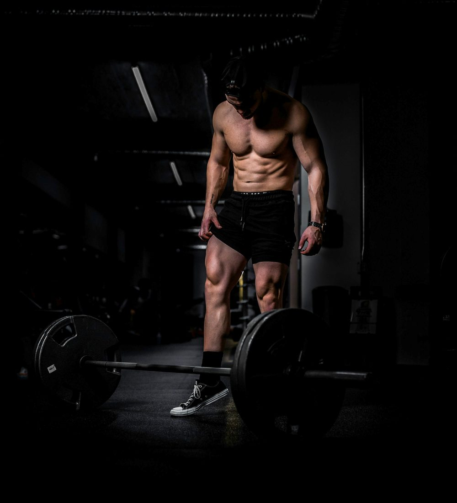

من نحن – MFT Medical Fitness Transformation


أكثر من مجرد تدريب
MFT منظومة Online Medical Fitness Coaching متكاملة تهدف إلى مساعدة الأشخاص على بناء جسم أقوى وحياة أكثر صحة، من خلال الجمع بين التدريب الرياضي، التغذية المخصصة، التقييم الصحي، والمتابعة المستمرة أونلاين.
نحن لا نؤمن بوجود خطة واحدة تناسب الجميع. كل شخص لديه أهداف مختلفة، وروتين مختلف، ومستوى مختلف من التدريب، واحتياجات صحية مختلفة.
لهذا تبدأ رحلة MFT بفهم الشخص أولًا، ثم بناء خطة تناسبه، ومتابعة تطوره وإجراء التعديلات اللازمة خلال الرحلة.
تعرف على د. محمد الريسFounder & Medical Fitness Director

فلسفة MFT
ما نؤمن به
-
01. العلم قبل العشوائية
الاعتماد على المعرفة والتقييم بدل التخمين والبرامج العشوائية.
-
02. الفرد قبل الخطة
الخطة يجب أن تناسب الشخص، وليس أن يحاول الشخص التكيف مع خطة جاهزة.
-
03. الصحة قبل الشكل
الشكل جزء من النتيجة، لكن الصحة والأداء والاستمرارية عناصر أساسية في الرحلة.
-
04. الاستمرارية قبل المثالية
البرنامج الناجح هو البرنامج الذي يستطيع العميل الالتزام به والاستمرار عليه.